Thelio Mega (Parts & Repairs)
Many components in your Thelio Mega can be upgraded or replaced as necessary. Power the machine off, switch off the power supply, and unplug all peripherals before working with any internal components. Then, follow these step-by-step guides for instructions:
- Removing the top case
- Removing the inner partition
- Adding/removing 2.5" storage drives
- Replacing the case fans
- Replacing a GPU
- Replacing the M.2 drives
- Removing the CPU duct
- Replacing the RAM
- Removing the top crossbar
- Replacing the CPU fans
- Replacing the CPU cooler/thermal paste and CPU
- Replacing the power supply
- Replacing the side fans
- Replacing the Thelio-IO boards
- Troubleshooting the power button
- Troubleshooting the Thelio-IO USB connection
Removing the top case:
The top case can be removed to access the internal components.
Tools required: Cross-head (Phillips) screwdriver (optional)
Time estimate: 2 minutes
Difficulty: Easy ●
Steps to remove the top case:
- Remove the eight outer screws holding the top case onto the machine.
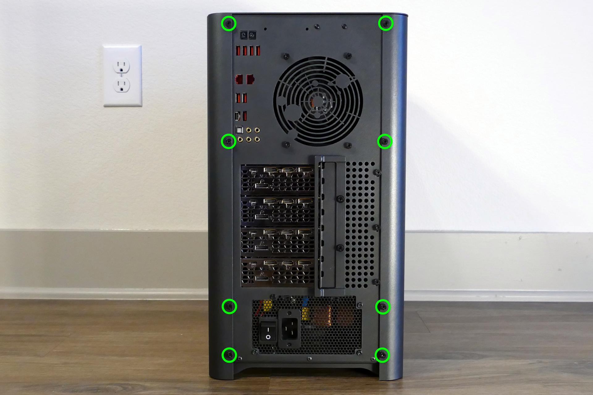
- Slide the top case up and off of the machine.
Removing the inner partition:
The inner partition provides a brace for the outer case and helps hold the internal components in place. The partition needs to be removed to access most internal components.
Tools required: Cross-head (Phillips) screwdriver (optional)
Time estimate: 5 minutes
Difficulty: Easy ●
Steps to remove the inner partition:
- Follow the steps above to remove the top case.
- Unscrew the three additional back screws holding the inner partition in place from the back.
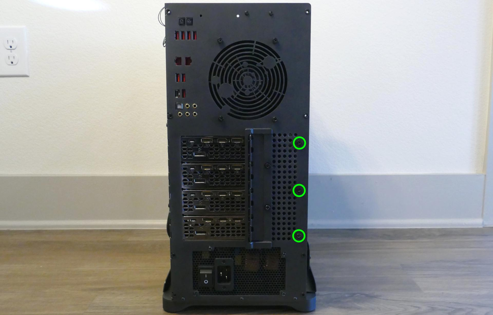
- Unplug the two side fan connectors, highlighted cyan below.

- Unscrew the two inner screws holding the partition in place from the side.
- Lift the inner partition away from the case.
Adding/removing 2.5" storage drives:
Thelio Mega r1.0 supports up to eight 2.5" SATA III drives. When using four M.2 drives, the following restrictions apply:
- If the bottom right M.2 slot has a SATA drive installed, then 2.5" SATA ports 4 and 5 will be unavailable (leaving a maximum of six 2.5" SATA drives.)
- If the bottom right M.2 slot has a PCIe NVMe drive installed, then 2.5" SATA ports 4, 5, 6, and 7 will be unavailable (leaving a maximum of four 2.5" SATA drives.)
To use all eight 2.5" SATA III slots, use three or less M.2 drives and leave the bottom right M.2 slot empty. See Replacing the M.2 drives to add, remove, or rearrange M.2 drives.
Tools required: Cross-head (Phillips) screwdriver (optional)
Time estimate: 10 minutes
Difficulty: Easy ●
Steps to add/remove 2.5" storage drives:
- Follow the steps above to remove the top case.
- If you are adding a new drive, unscrew the hard drive screw cover from the inner partition (shown below), then remove the inner partition.

- Pop out one of the black plastic rings and slide four screws (per drive) out of the inner partition.
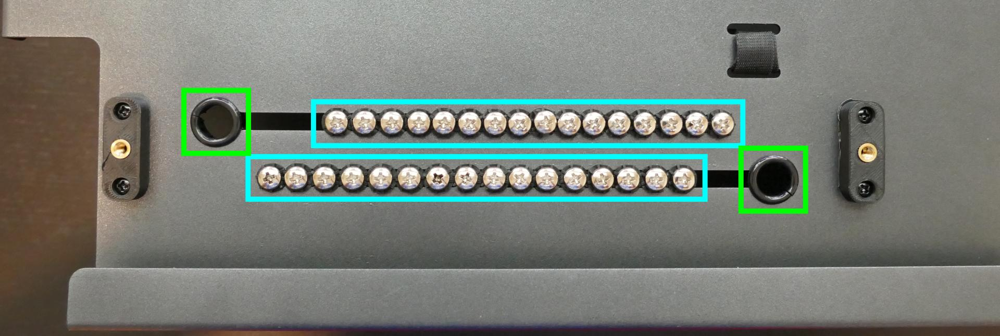
- Insert four screws into each 2.5" storage drive you wish to install.
- Unscrew the top cover if you are accessing the top four 2.5" slots, or the bottom cover if you are accessing the bottom four 2.5" slots.
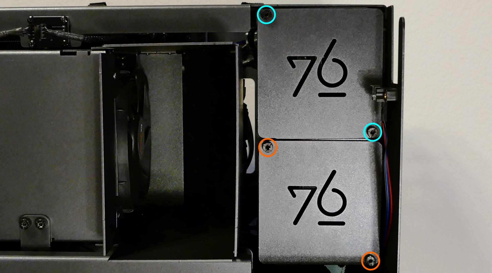
- Slide each 2.5" drive into one of the slots leading to the Thelio-IO boards.
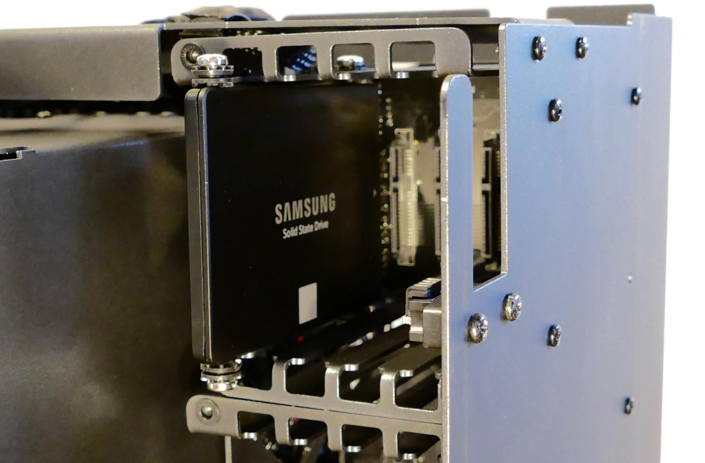
Replacing the case fans:
Thelio Mega r1.0 has two case-mounted fans: one on the bottom, and one on the side next to the motherboard.
Tools required: Cross-head (Phillips) screwdriver
Time estimate: 15 minutes
Difficulty: Medium ●
Steps to replace the side case fan:
- Follow the steps above to remove the top case and remove the inner partition.
- Unscrew the fan's screws on the opposite side from where it's mounted.
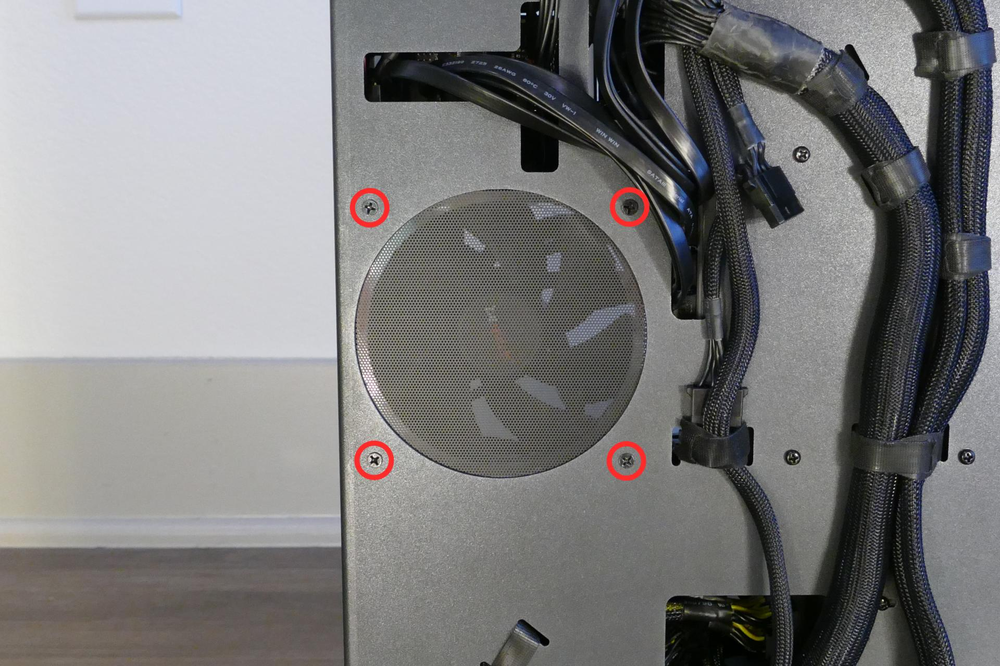
- Unplug and remove the fan.
- When replacing the fan, the components should be mounted in the following order:
- Chassis
- Dust filter
- Acrylic spacer
- Fan
Steps to replace the bottom case fan:
- Follow the steps above to remove the top case and remove the inner partition.
- Pull the rubber tabs until they come loose from the plastic pins holding the fan in place.

- When replacing the fan, hold the rubber tabs in place while pushing the plastic pins in from below the machine (it's necessary to tilt the machine when inserting the plastic pins.)

- The components should be mounted in the following order:
- Chassis
- Dust filter
- Acrylic spacer
- Fan
Replacing a GPU:
Thelio Mega supports up to four dual-slot GPUs, two with PCIe 4.0 x16 and two with PCIe 4.0 x8 (x16 cards will run at reduced bandwidth in the x8 slots.) Mixing NVIDIA and AMD GPUs is not recommended.
Tools required: Cross-head (Phillips) screwdriver
Time estimate: 15 minutes
Difficulty: Easy ●
Steps to replace a GPU:
- Follow the steps above to remove the top case and remove the inner partition.
- Unscrew the two back screws holding the PCIe bracket in place, then slide the PCIe bracket open.

- Unscrew the four screws holding the side GPU brace in place. Remove the brace.

- If you're removing a GPU, unplug the GPU power cable from the right side of the card. Hold down the latch on the connector while unplugging the cable.

- Hold the latch on the motherboard to free the PCIe connection, then pull the card out of the slot.
- If removing one of the inner GPUs, it may be necessary to remove one of the outer GPUs first in order to reach the latch.
- If space is tight, a long object such as a screwdriver can be used to press the latch.

- When installing new GPUs, the slots should be utilized in the following order:
- Primary GPU: top slot.
- Secondary GPU: third slot from the top.
- Tertiary GPU: fourth slot from the top (bottom slot).
- Quaternary GPU: second slot from the top.
- After inserting the new GPU into its slot, connect the power cables.
- The maximum number of power cables are preinstalled in your system, but some may be tied back using velcro if the system shipped with less than four GPUs.
- Once all GPUs are installed, replace the side GPU brace, back PCIe bracket, inner partition, and top case.
- The side GPU brace includes a plastic piece sized to the GPUs that originally shipped with the system. To remove the plastic piece, unscrew it from the brace.

The plastic GPU brace's primary function is to prevent damage during shipping. The system can be run without the brace if it doesn't fit an upgraded card; the back PCIe bracket provides primary support for the GPUs.
Replacing the M.2 drives:
Thelio Mega has four M.2 slots, which support PCIe NVMe Gen 4 x4, PCIe NVMe Gen 3 x4, or SATA III. The following restrictions apply:
- Top M.2 slot: Supports sizes 22110, 2280, and 2260.
- Middle M.2 slot: Supports sizes 22110 and 2280.
- Bottom left M.2 slot: Supports sizes 22110 and 2280.
- Bottom right M.2 slot:
- Supports size 2280.
- If a SATA drive is installed in this slot, then 2.5" SATA ports 4 and 5 will be unavailable.
- If a PCIe NVMe drive is installed in this slot, then 2.5" SATA ports 4, 5, 6, and 7 will be unavailable.
Tools required: Cross-head (Phillips) screwdriver
Time estimate: 23 minutes
Difficulty: Medium ●
Steps to replace the M.2 drives:
- Follow the steps above to remove the top case, remove the inner partition, and remove the GPU brace and GPUs.
- Remove the M.2 heatsink covering the slots you wish to access.
- The top and middle M.2 slots are behind the top M.2 heatsink (highlighted cyan below).
- The bottom left and bottom right M.2 slots are behind the bottom M.2 heatsink (highlighted yellow below).
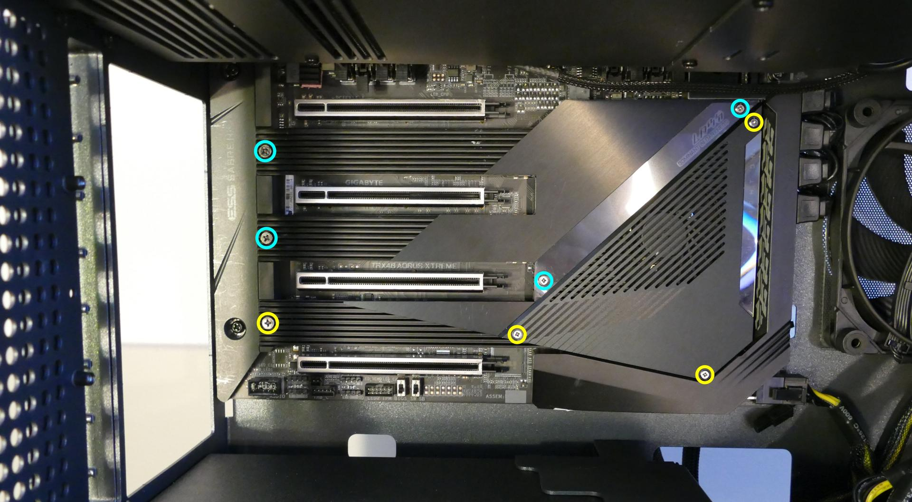
It may take some pressure to remove the heatsink and thermal tape from the M.2 drive. Pull slowly to avoid breaking the thermal tape.
- Unscrew the retainer screw opposite the M.2 slot.

- Remove the existing M.2 drive by pulling it out of the slot.
- Insert the new M.2 drive into the slot and hold it in place.
- Replace the retainer screw.
- If utilizing a slot for the first time, peel the plastic backing off of the heatsink to expose the double-sided thermal tape for that slot.
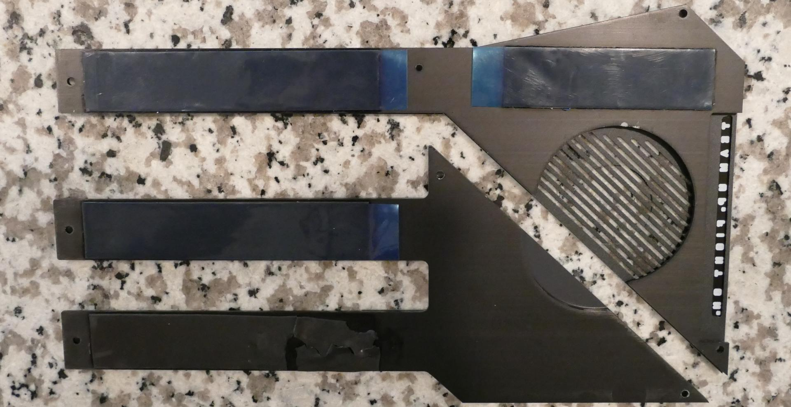
- Replace the M.2 heatsinks, GPUs, GPU brace, inner partition, and top case.
Removing the CPU duct:
The CPU duct guides airflow through the CPU coolers. It covers the CPU and RAM slots on the motherboard.
Tools required: Cross-head (Phillips) screwdriver (optional)
Time estimate: 7 minutes
Difficulty: Easy ●
Steps to remove the CPU duct:
- Follow the steps above to remove the top case, remove the inner partition, and remove the GPU brace.
- Unplug the connectors for the two CPU duct-mounted fans.
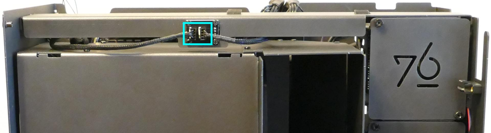
- Unscrew the four back screws holding the CPU duct in place.

- Pull the CPU duct away from the machine.
Replacing the RAM:
Thelio Mega r1.0 supports up to 256GB (8x32GB) of RAM. The RAM sticks are Unregistered/Unbuffered ECC DDR4 DIMMs running at a speed of 3200MHz. If you've purchased new RAM, need to replace your RAM, or are reseating your RAM, follow these steps.
Tools required: Cross-head (Phillips) screwdriver (optional)
Time estimate: 20 minutes
Difficulty: Medium ●
Steps to replace the RAM:
- Follow the steps above to remove the top case, remove the inner partition, remove the GPU brace, and remove the CPU duct.
- To remove an existing RAM stick, flip the bottom latch down away from the stick, then pull the stick out of the slot, starting from the bottom edge. (The top of the RAM slot does not move.)
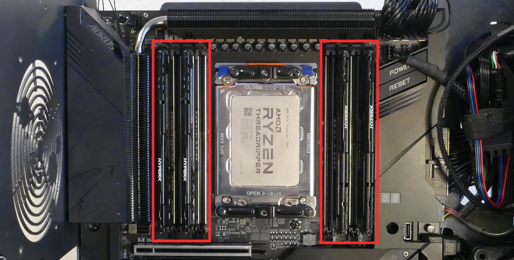
The CPU cooler has been removed for better visibility in the above photo; removing the CPU cooler is not required to access all eight of the RAM slots.
- Make sure the tab on the bottom of the slot is open (pulled downwards), then insert the new RAM (or re-seat the existing RAM) into the slot.
- The RAM stick will only fit in one direction. On the left side of the CPU, the larger group of pins goes on bottom; on the right side of the CPU, the larger group of pins goes on top.
- Use the following guide for placement of the RAM sticks:
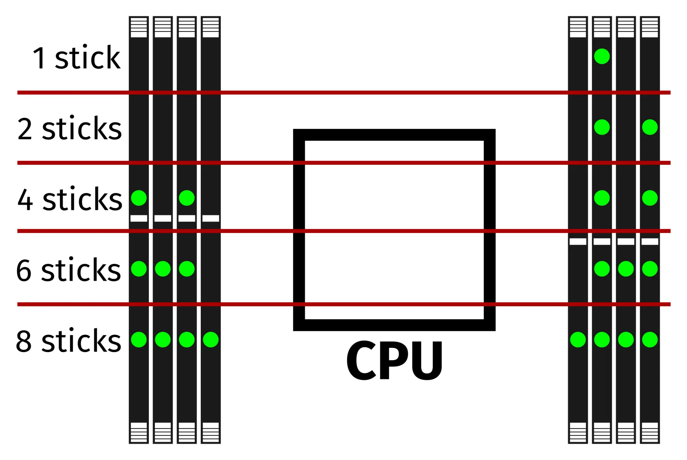
- Replace the CPU duct, GPU brace, inner partition, and top case.
Removing the top crossbar:
The top crossbar provides a brace for the outer case. It needs to be removed when replacing certain components (such as the top Thelio-IO board and the CPU cooler-mounted fan.)
Tools required: Cross-head (Phillips) screwdriver
Time estimate: 7 minutes
Difficulty: Easy ●
Steps to remove the top crossbar:
- Follow the steps above to remove the top case.
- Unplug the two top fan connectors.
- Unscrew the four screws holding the top crossbar in place (two on the front of the machine, and two on the back.)

- Lift the top crossbar out of the system. (It is not necessary to unplug the fan cable underneath the top crossbar unless you are replacing that cable or the Thelio-IO board it plugs into.)
Replacing the CPU fans:
Thelio Mega r1.0 contains three CPU fans. Two are mounted on the CPU duct, and one is mounted on the cooler.
Tools required: Cross-head (Phillips) screwdriver
Time estimate: 25 minutes
Difficulty: Medium ●
Steps to replace the duct-mounted CPU fans:
- Follow the steps above to remove the top case, remove the inner partition, remove the GPU brace, and remove the CPU duct.
- To remove the back CPU duct fan, unscrew the four screws holding the fan brackets into the duct (highlighted green below).

- Free the cable from the velcro loop (highlighted blue above), then unscrew the four screws holding the brackets onto the fan.
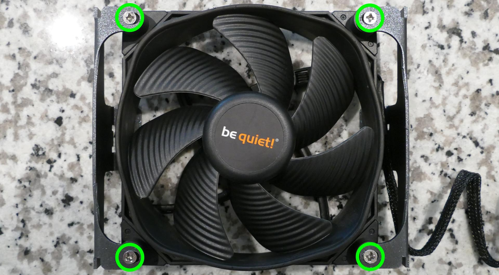
- To remove the front CPU duct fan, unscrew the four screws attaching the front of the duct to the back (highlighted red above).
- Then, unscrew the four screws attaching the fan to the duct.

Steps to replace the cooler-mounted CPU fan:
- Follow the steps above to remove the top case, remove the inner partition, remove the GPU brace and GPUs, remove the CPU duct, and remove the top crossbar.
- Pull the corners of the fan's top clip away from the heatsink it's held to.

- Repeat the process for the bottom clip, then slide the fan down and out of the CPU cooler.
- Unplug the fan from the Thelio-IO board.
- The CPU cooler fan plugs directly into the
CPUOUT0port on the bottom Thelio-IO board.
- The CPU cooler fan plugs directly into the
- When reinstalling the CPU fans, all three fans should be oriented so the side with the non-spinning cover faces the back of the machine, while the spinning side faces the front of the machine.
Replacing the CPU cooler and CPU:
The CPU cooler dissipates heat from the CPU to the heatsink, where the CPU fans expel it from the system. Depending on your climate and the age of the machine, replacing the thermal paste between the CPU and the cooler/heatsink may help the system run cooler.
The CPU uses an AMD sTRX4 socket.
Tools required: Cross-head (Phillips) screwdriver (long), torx screwdriver, thermal paste
Time estimate: 35 minutes
Difficulty: High ●
Steps to remove the CPU cooler/thermal paste:
- Follow the steps above to remove the top case, remove the inner partition, remove the GPU brace and GPUs, remove the CPU duct, remove the top crossbar, and remove the cooler-mounted CPU fan.
- Unscrew the two screw access covers from the holes in the cooler plate.

- While holding the cooler in place so it doesn't fall, reach a cross-head (Phillips) screwdriver through the holes in the cooler plate and loosen the two screws holding the cooler onto the mounting bracket.
- The cooler will come away from the CPU.
- The two screws on the crossbar attaching the CPU cooler to the mounting bracket are held to the crossbar with small rubber rings.
- If the rubber rings become detached, slide them back onto the screws before reinstalling the cooler.

- Using a paper towel, clean the existing thermal paste off of the heatsink and CPU. You may also use a small amount of rubbing alcohol if the old paste is dried or difficult to remove.
Steps to replace the CPU:
- Unscrew the four screws holding the two mounting brackets onto the motherboard.

- The black plastic standoff covers will also come loose once the mounting bracket screws are removed. Remember to replace the black plastic standoff covers when reinstalling the mounting brackets.
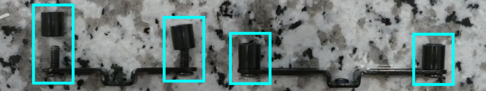
- Using the torx screwdriver, loosen the three CPU cover screws in reverse order (starting with #3, then #2, and finally #1.)
- These screws will not come out of the CPU cover when they are fully loosened.

- The CPU cover will lower once its screws are loosened. There may be additional remnants of thermal paste underneath the CPU cover.
- Pull the blue metal tabs away from the motherboard to flip the CPU holder down on top of the CPU cover.
- Caution: Be careful not to bend any of the gold pins on the CPU socket, and do not touch the gold pads on the CPU.

- Pull the orange tab to slide the CPU out of the CPU holder.
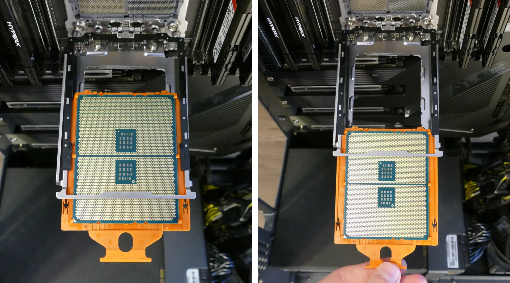
- Each AMD Threadripper CPU is shipped inside of an orange plastic clip, so it should not be necessary to remove the CPU from the orange plastic clip. However, if desired (such as to clean off additional thermal paste), the plastic clip can be removed by pulling it back near each of the tabs holding the CPU in place.
- When reinstalling the CPU into the clip, be sure to match the original orientation, with the triangle on the CPU closest to the tab on the plastic clip.

- Slide the new CPU into the CPU holder. Make sure the orange CPU clip aligns properly with the black rails on the CPU holder.
- Fold the CPU holder up onto the motherboard until it clicks into place, fold the CPU cover back into place, and tighten the CPU cover screws in ascending order (starting with #1, then #2, and finally #3.)
- Screw the two mounting brackets for the CPU cooler back onto the motherboard (the smaller bracket goes above the CPU, while the larger bracket goes below the CPU.)
Steps to install the thermal paste/CPU cooler:
- Place a line of thermal paste onto the CPU.
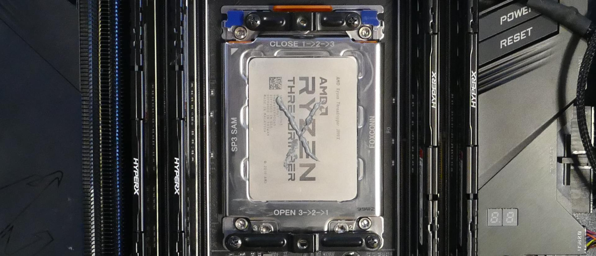
- Slide the CPU cooler crossbar on the back of the heatsink until the grooves are positioned correctly.
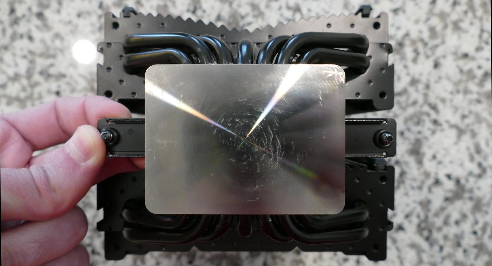
- While holding the crossbar onto the heatsink, hold the heatsink in position and use the long cross-head screwdriver (inserted through the holes in the cooler plate) to screw each end of the crossbar into one of the mounting brackets.
- The logo on the cooler should be upright.
- The rubber strips on the inside of the cooler should be closest to the back of the machine, while the rubber strips on the outside of the cooler should be closest to the front of the machine.

- Reinstall the cooler-mounted CPU fan, top crossbar, CPU duct, GPUs, GPU bracket, inner partition, and top case.
Replacing the power supply:
The power supply unit (PSU) is modular and can be replaced with another unit of the same model. Different models may not be compatible with the cabling pre-installed in the Thelio Mega.
Tools required: Cross-head (Phillips) screwdriver
Time estimate: 30 minutes
Difficulty: High ●
Steps to replace the power supply:
- Follow the steps above to remove the top case, remove the inner partition and remove the GPU brace and GPUs.
- Unplug all of the modular cabling from the back of the PSU.
- Some of the cables may be easier to unplug after the PSU has been unscrewed/removed from the case.
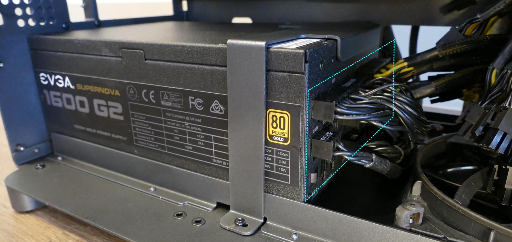
- Unscrew the PSU bracket from the reverse side of the case.
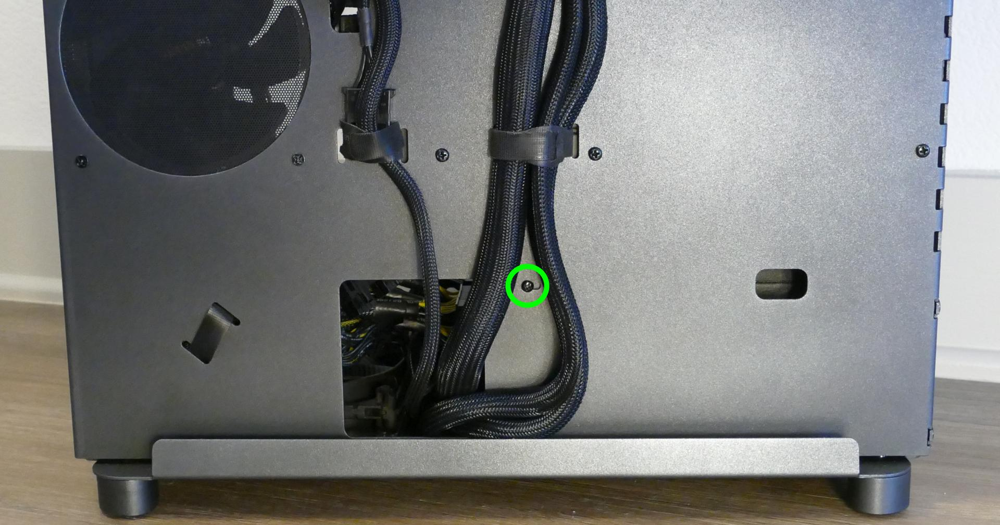
- Unscrew the PSU bracket from the bottom of the case.

- Remove the PSU bracket.
- Unscrew the four screws holding the PSU in from the back of the case.

- Remove/replace the PSU. Set the replacement PSU on top of the two rubber posts that hold it at the correct height.
- The replacement PSU should be installed with the fan facing the bottom of the case.

- After screwing in the replacement PSU and replacing the PSU bracket, use the labels and pin counts on the cables and ports to ensure the power cables are reconnected in the proper locations.
- Remember that not all of the available connectors will plug into the PSU-- eight connectors (on four cables) are to be plugged into the GPUs.
- If the replacement PSU has an "ECO Mode" switch, make sure it is switched on.
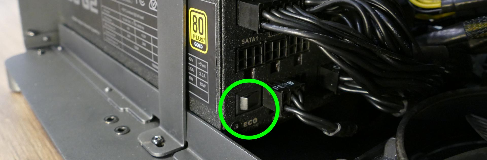
Replacing the side fans:
Thelio Mega r1.0 has two intake fans mounted on the inner partition. The fans can be replaced if they become defective/noisy.
Tools required: Cross-head (Phillips) screwdriver
Time estimate: 15 minutes
Difficulty: Easy ●
Steps to replace the side fans:
- Follow the steps above to remove the top case and remove the inner partition.
- Pull the rubber tabs until they come loose from the plastic pins holding the fan in place.
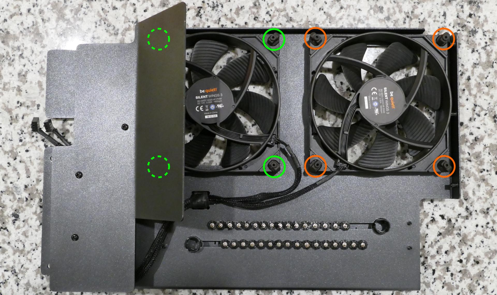
- Pull the end of the fan cable through the opening and release any velcro strips that are holding it in place.
- When replacing the fan, hold the rubber tabs in place while pushing the plastic pins in from the opposite side.
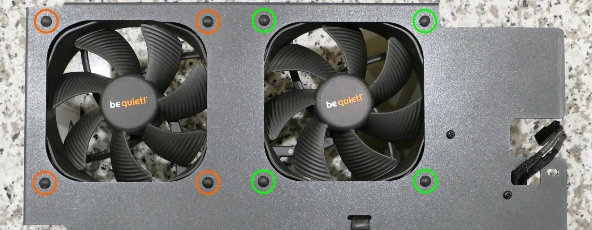
Replacing the Thelio-IO boards:
Tools required: Cross-head (Phillips) screwdriver
Time estimate: 25 minutes
Difficulty: High ●
The Thelio-IO board handles the front power button, fan control, and 2.5" SATA connectors for the system. If one of the Thelio-IO boards becomes defective, it can be replaced using the instructions below.
- Follow the steps above to remove the top case, remove the inner partition, remove the top crossbar, and remove the front cover from the 2.5" drive cage for the Thelio-IO board that is being replaced.
- Use the cutouts on the opposite side of the chassis to unplug all cabling from the Thelio-IO board that is being replaced.
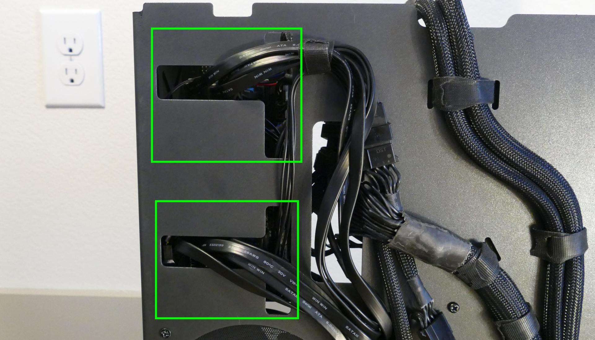
- Unscrew the two screws on the top of the upper drive cage (for the top Thelio-IO board) or the bottom of the lower drive cage (for the bottom Thelio-IO board).

- While pulling the loose side of the drive cage away from the Thelio-IO board, move the board back and out of the drive cage.
- Place the new Thelio-IO board into the drive cage and replace the screws and wiring.
Troubleshooting the power button:
If the front power button doesn't power the machine on or doesn't light up when the system is powered on, try the following troubleshooting steps:
- Ensure the system powers on normally using the internal power button.
- Reseat the front power button to ensure it's making proper contact.
- Check the wiring for the front power button.
- Replace the front power button, if necessary.
Tools required: Cross-head (Phillips) screwdriver (optional)
Time estimate: 20 minutes
Difficulty: Medium ●
Steps to power the machine on using the internal power button:
- Follow the steps above to remove the top case and remove the inner partition.
- Ensure the system is plugged into power, and the power supply switch is in the 1 (On) position.
- Push the small button labeled
B0on the top Thelio-IO board.
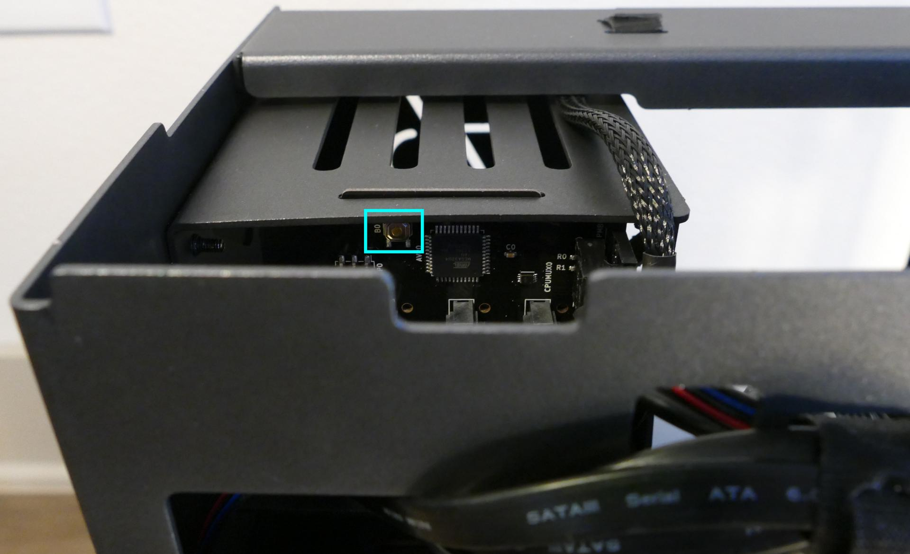
- If the Thelio-IO
B0button powers the machine on, then the issue is either the front power button or its connection to the Thelio-IO board. Check the front power button wiring. - If the Thelio-IO
B0button does not work, press thePowerbutton in the top right of the motherboard.
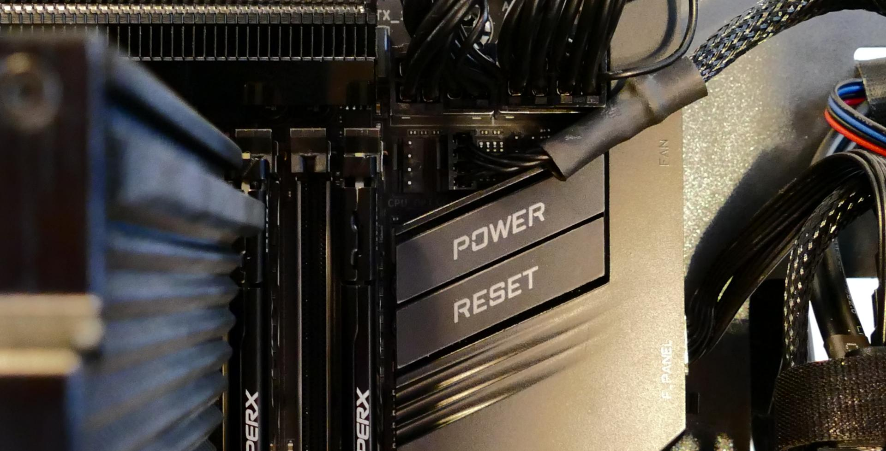
- If the motherboard
Powerbutton works, but the Thelio-IOB0button does not work, then the issue is either the Thelio-IO board or its connection to the motherboard. Check the wiring between the Thelio-IO board and the motherboard.- The second Thelio-IO board's power ports can be used if the first board becomes defective.
- If the motherboard
Powerbutton does not work, then the issue may be the motherboard, or it may be the power supply or its connection to the motherboard. Ensure all connections are plugged in properly and that the power supply is switched to the 1 (On) position.
Steps to check the front power button wiring:
- Follow the steps above to remove the top case, remove the inner partition, remove the GPU brace, and remove the CPU duct.
- On the back of the power button, the four pins should be connected to the four-wire connector as follows:

- On the front power button receptacle, the four-pin connector should have the red wire on the left and the black wire on the right.
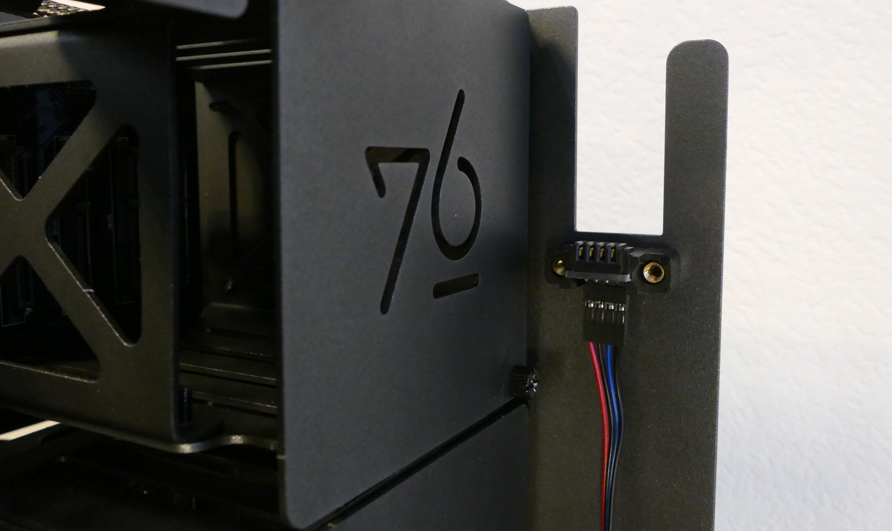
- The front power button receptacle should plug into the
PFPDport on the top Thelio-IO board, with the red wire on the bottom and the black wire on the top.

- The
PMBDport on the Thelio-IO board should connect to an adapter:- The red wire on the four-port connector should be on the bottom on the Thelio-IO board.
- The other side of the cable connects to the adapter, with the red wire on the top left, the blue pair immediately following the red pair, and a black wire on the right.
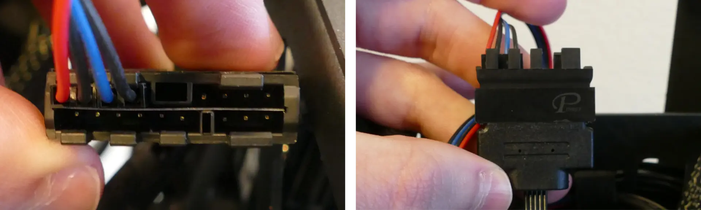
- The adapter should connect to the
F-PANEL(front panel) input on the motherboard.

Steps to replace the power button:
- Follow the steps above to remove the top case.
- Follow the instructions in the Replace the Thelio Power Button support article.
Troubleshooting the Thelio-IO USB connection:
The Thelio-IO boards connect to the motherboard's USB headers for firmware updates and fan control within the host OS. If the fans seem to be stuck on full blast, check the Thelio-IO USB connections.
Tools required: Cross-head (Phillips) screwdriver (optional)
Time estimate: 15 minutes
Difficulty: Medium ●
Steps to check the USB wiring:
- Follow the steps above to remove the top case, remove the inner partition, remove the GPU brace, and remove the CPU duct.
- Two of the Thelio-IO boards have
USB0ports. The port on each board connects to a cable (labeledUSB) with the red wire on the bottom.

- The two internal USB cables plug into the motherboard's USB headers.
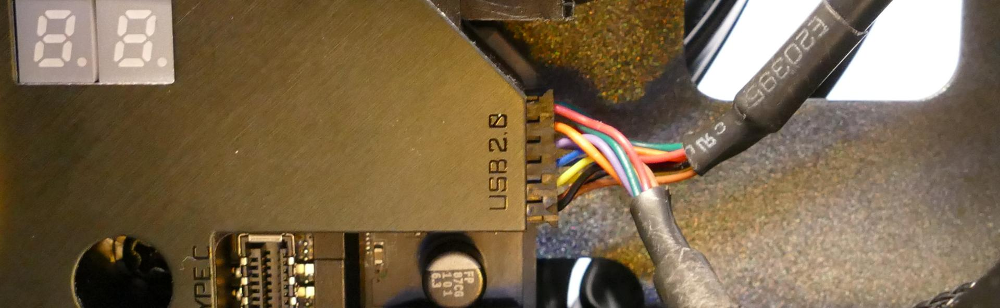